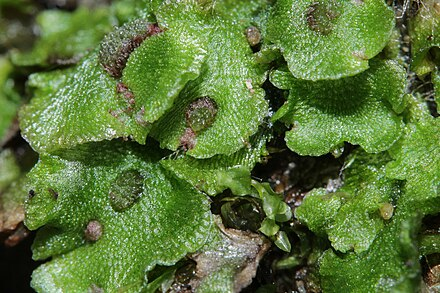

Cleveaceae
Cleveaceae Liverworts
Cleveaceae is a family of complex thalloid liverworts in the order Marchantiales (class Marchantiopsida). They possess internally differentiated thalli with air chambers and pores (often simple). A key characteristic distinguishing them from families like Aytoniaceae and Marchantiaceae is that their female reproductive structures (archegonia) are borne dorsally in clusters or on very short, sessile, or subsessile receptacles, rather than on distinctly stalked and lobed archegoniophores.
Overview
The Cleveaceae family includes genera such as Athalamia, Clevea, Sauteria, and Peltolepis, comprising approximately 15-20 species. These complex thalloid liverworts typically form prostrate, dichotomously branching thalli, sometimes in rosettes. They possess air chambers and pores, allowing for gas exchange. While sharing features with other Marchantiales, Cleveaceae stands out due to the relatively simple organization of its female reproductive structures.
Species in this family are often found in specific, often harsh environments, particularly arctic-alpine regions, Mediterranean climates, and arid or semi-arid zones. They typically grow on thin soil over rock or directly on rock surfaces. Instead of the elaborate, stalked female receptacles seen in related families, Cleveaceae species bear their archegonia (and subsequent sporophytes) in dorsal clusters or on small, sessile or very shortly stalked dorsal cushions or outgrowths.
Their adaptations to cold or dry environments and their somewhat intermediate position regarding receptacle development make them important for understanding the ecological and evolutionary diversity within the Marchantiales.
Quick Facts
- Scientific Name: Cleveaceae
- Common Name: Cleveaceae Liverworts
- Number of Genera: Approximately 3-4 (e.g., Athalamia, Clevea, Sauteria, Peltolepis)
- Number of Species: Approximately 15-20
- Distribution: Widespread but scattered; prominent in arctic-alpine regions (Holarctic), Mediterranean areas, arid/semi-arid zones; typically on soil over rock.
- Evolutionary Group: Bryophytes - Liverworts (Marchantiophyta) - Class Marchantiopsida - Order Marchantiales
Key Characteristics
Growth Form and Habit
Plants are thalloid gametophytes, generally small to medium-sized, growing prostrate and branching dichotomously, sometimes forming distinct rosettes. They typically grow on soil, often thin soil layers over rock, in arctic-alpine or arid/semi-arid environments.
Thallus Structure
The thallus shows internal differentiation characteristic of complex thalloid liverworts. The dorsal epidermis contains air pores that lead into underlying air chambers containing photosynthetic tissue. The air pores are typically simple (a hole surrounded by a single ring of cells), although in some species they may become secondarily subdivided or appear slightly more complex. The ventral surface bears rhizoids (smooth and pegged) and usually conspicuous ventral scales, often in two rows.
Reproductive Structures
Sexual condition varies (monoicous or dioicous). Antheridia (male organs) are typically grouped in sessile, sometimes ill-defined, cushions or patches on the dorsal thallus surface, occasionally slightly sunken. The defining feature relates to the female structures: Archegonia (female organs) are borne dorsally on the thallus, either scattered or in distinct clusters. These clusters may be situated on a slightly raised area or a very short, sessile, or subsessile receptacle (archegoniophore) that lacks the distinct stalk and lobed structure seen in Aytoniaceae or Marchantiaceae. Protective scales or small involucres often surround the archegonia/developing sporophytes. Asexual reproduction via gemmae is generally absent.
Sporophyte and Spores
The sporophyte develops dorsally, protected by surrounding scales or involucres. It consists of a foot, a short seta, and a spherical to ovoid capsule. The capsule wall is typically unistratose (one cell layer thick). Dehiscence (opening) occurs irregularly or via poorly defined valves or an indistinct lid. Functional elaters with spiral thickenings are present within the capsule and assist in spore dispersal. Spores are released singly.
Chemical Characteristics
Cleveaceae are not generally known for strong aromatic compounds like some related families. Their chemical makeup likely includes adaptations related to survival in cold, exposed, or dry conditions typical of their habitats.
Field Identification
Identifying Cleveaceae often relies on habitat and the nature of the reproductive structures, distinguishing them from relatives with more elaborate receptacles:
Primary Identification Features
- Complex thallus with air pores/chambers: Possesses internal differentiation typical of Marchantiales. Pores usually appear simple with a hand lens.
- Dorsal, sessile/subsessile female receptacles: Archegonia and sporophytes are borne dorsally, either in clusters directly on the thallus or on very short, unlobed cushions or outgrowths. Crucially lacks the distinctly stalked, lobed archegoniophores of Aytoniaceae/Marchantiaceae.
- Conspicuous ventral scales: Underside of the thallus has noticeable scales, often in two rows.
- Absence of gemma cups.
Secondary Identification Features
- Habitat specificity: Often found in arctic-alpine regions or arid/semi-arid environments, typically on soil over rock.
- Sessile antheridial pads/clusters.
- Dichotomous branching.
Seasonal Identification Tips
- Gametophyte: Often perennial, visible when not covered by snow or desiccated.
- Reproductive Structures: Develop seasonally. Observing the dorsal position and sessile/subsessile nature of the female structures (archegonial clusters or simple receptacles) is key for identification.
Common Confusion Points
- Aytoniaceae / Marchantiaceae: Distinguished by their prominent, distinctly stalked archegoniophores with lobed heads. Marchantiaceae also has barrel-shaped pores and often gemma cups.
- Ricciaceae: Lack stalked receptacles entirely (sporophytes embedded in thallus), many lack elaters, thallus structure differs.
- Simple thalloid liverworts (e.g., Pellia, Metzgeriales): Lack air pores, air chambers, complex ventral scales, and the specific reproductive structures of Marchantiales.
Field Guide Quick Reference
Look For:
- Complex thallus (pores/chambers)
- Female structures dorsal, sessile/subsessile (NOT stalked & lobed)
- Prominent ventral scales
- No gemma cups
- Often arctic-alpine/arid habitat
Key Distinctions:
- Lack of stalked/lobed female receptacles distinguishes from Aytoniaceae/Marchantiaceae.
- Presence of pores/chambers/scales distinguishes from simple thalloids.
- Presence of elaters/non-embedded sporophyte distinguishes from Riccia.
Notable Examples
Genera within Cleveaceae often occupy specific ecological niches:

Athalamia hyalina
(No common name)
A species often found in arctic and alpine regions. It forms relatively small thalli, and the archegonia are typically grouped dorsally within scale-like involucres, without forming a distinct raised receptacle.

Sauteria alpina
(No common name)
Another arctic-alpine species, often growing on calcareous soils. It bears archegonia in dorsal groups protected by scales, sometimes on a very slightly raised cushion but lacking a stalk.

Peltolepis quadrata
(No common name)
Also found in arctic-alpine habitats. This species shows perhaps a slightly more developed female receptacle than others in the family, appearing as a small, sessile, somewhat shield-shaped dorsal structure bearing the archegonia/sporophytes.
Phylogeny and Classification
Cleveaceae is firmly placed within the order Marchantiales, representing a lineage of complex thalloid liverworts. Phylogenetically, it is related to other families in the order like Aytoniaceae and Marchantiaceae. However, it is distinguished by the apparent reduction or lack of development of the stalked archegoniophore that characterizes those families.
The family may represent a condition where the elaborate stalked receptacle either failed to evolve to the same extent as in other Marchantiales lineages, or was secondarily reduced. Its members often exhibit adaptations to challenging environments like high altitudes/latitudes or arid regions. Understanding Cleveaceae helps illuminate the evolutionary pathways and morphological diversity within the complex thalloid liverworts.
Position in Plant Phylogeny
- Kingdom: Plantae
- Clade: Embryophytes (Land plants)
- Division: Marchantiophyta (Liverworts)
- Class: Marchantiopsida
- Order: Marchantiales
- Family: Cleveaceae
Evolutionary Significance
Cleveaceae is evolutionarily significant due to:
- Receptacle Evolution: Provides insight into the diversity and potential reduction of reproductive structures within Marchantiales.
- Adaptations to Extreme Environments: Includes species specialized for arctic-alpine or arid conditions.
- Phylogenetic Placement: Helps clarify relationships among families within the complex thalloid liverworts.
- Morphological Diversity: Demonstrates variation in pore structure and receptacle development within the Marchantiales framework.